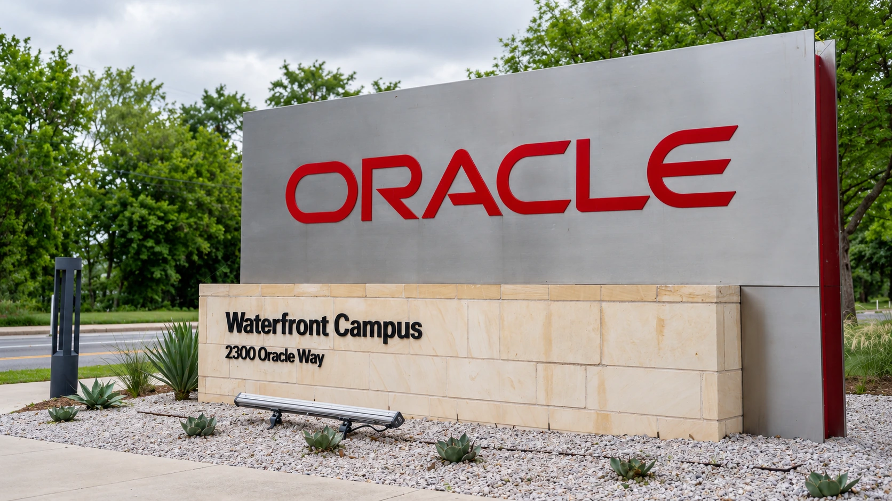

Oracle Adds Google AI Chips as Nvidia Partnership Expands
Google’s TPUs are due on Oracle Cloud in 2027. A separate Nvidia expansion combines already available systems with a larger planned rollout.

Oracle is widening the choice of processors inside its cloud, announcing on Tuesday that customers will be able to use Google's AI chips through Oracle Cloud Infrastructure starting in calendar 2027. The agreement makes Oracle the first hyperscale cloud provider outside Google to offer the company's Tensor Processing Units, or TPUs, according to the companies.
At the same event in Las Vegas, Oracle and Nvidia announced a separate plan to expand Vera Rubin computing systems to multi-gigawatt scale. Oracle said Vera Rubin NVL72 systems and Nvidia Vera CPUs are now generally available on its cloud. The larger expansion remains a plan. Those two timelines matter: an available configuration is different from an entire future fleet already being installed and generating revenue.
Together, the announcements position Oracle as a place to rent several kinds of AI computing rather than rely on one processor design. They also extend the competition beyond the chip itself. Power, cooling, networking, software and the ability to keep expensive equipment busy determine how useful that choice becomes. Our analysis of returns on AI spending explains why capacity announcements need to be tested against productive use.
Google gains a new route to customers
Google's TPUs are purpose-built AI accelerators. The new arrangement brings them into Oracle's infrastructure, where Oracle will supply the data-center power, cooling and networking needed for deployment. Availability is planned for 2027, with capacity increasing over several years. The announcement does not say that customers can rent those TPUs from Oracle today.
The commercial implication is a broader distribution channel for Google's technology. A customer considering Oracle's cloud would gain another hardware option without necessarily moving the entire application to Google's own cloud. But access to an additional processor is not the same as effortless migration. Software dependencies, model behavior, data movement and operational processes remain part of a real deployment decision.
Oracle and Google describe the eighth TPU generation as separate designs for training and inference, the work of running a trained model. That division reflects different demands. Building or updating a large model and repeatedly responding to users do not necessarily make the same hardware choice economical. A useful comparison would measure the complete workload and required service quality, rather than equating a chip's headline capability with a lower bill.
Nvidia remains central to the expansion
The Nvidia agreement adds scale while keeping a familiar software foundation. Oracle says its planned expansion builds on existing Blackwell-generation infrastructure and uses Nvidia's CUDA software. The companies also outlined a smaller eight-GPU Rubin configuration, separate from the 72-GPU rack-scale design. That gives the announced portfolio different deployment sizes rather than a single mandatory configuration.
Oracle's announcement also separates CPU work from GPU work. An AI agent may call a model, then execute code, retrieve information or operate a tool before asking the model for another response. The companies say their infrastructure lets customers scale the corresponding CPU and GPU resources independently. The intended benefit is to avoid paying for idle capacity while one stage waits for another.
That is a useful design objective, not an independently measured saving established by Tuesday's announcement. Our coverage of enterprise AI economics examines how integration, accuracy and supervision affect the final return. Faster computation can improve a workflow, but it does not eliminate the cost of checking an agent's work or connecting it safely to business systems.
More suppliers do not remove the physical bottlenecks
Reuters reported that financial terms of the expanded Nvidia relationship were not disclosed. Consequently, the multi-gigawatt description should not be converted into an invented contract value. It describes intended infrastructure scale, not a disclosed dollar payment, a revenue guarantee or proof that all the necessary sites are energized.
Power and cooling still have to be delivered at the right location and time. Our report on Nvidia's European infrastructure partnerships shows why those physical constraints are becoming part of the AI supply chain. Oracle's announcements broaden its technological options; their economic value will depend on deployment schedules, customer uptake and the cost of turning the available equipment into consistently useful computing. The next meaningful evidence will be delivered capacity and actual service performance, rather than another comparison of theoretical chip specifications.
Sources and methodology
Sources checked October 27, 2026. Company statements, reported findings and forecasts are attributed in the text. Financial and operational implications are editorial analysis.